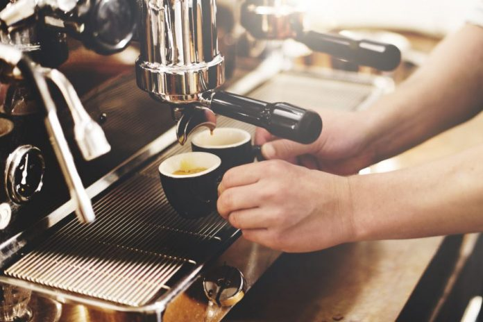
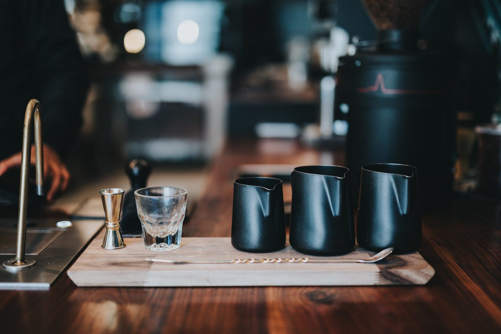

Conoce nuestras variedades

cafe del mundo
directo a tu mesa


Los cafés de Brasil, tratados casi todos por vía seca, son bastante diversos: los embarcados por el puerto de Santos, son conocidos por ser los más suaves. En cuanto a reconocimiento mundial, los cafés del Sul de Minas, son populares por su cuerpo intenso y fuerte perfume. Los cafés de Río son muy particulares, con un sabor a yodo que recibe el nombre de “gusto de Rio”, y resulta muy difícil de tipificar los cafés de Brasil con un patrón único. Dentro de Brasil, hay que destacar la producción de un robusta llamado conilón, sobre todo en las regiones de Rondonia.El café de Brasil corresponde a la variedad arábica, por ello predomina el sabor dulzón, similar a los cafés procedentes de África, aunque sin la acidez característica de estos. El café de Brasil se caracteriza por su aroma suave y fino y cuerpo alto. Un café de sabor achocolatado con notas de frutos secos y madera, en definitiva, un café que apetece tomar a cualquier hora.

Etiopía, destaca entre otras cosas por su cultivo de café. Cada año se estima una producción de entre 200 y 250 mil toneladas de café, una gran parte es exportada, otra parte se queda en el país, dónde el consumo de café está muy arraigado entre la población. Muchos atribuyen a este país el origen del café, de hecho se habla de la historia del pastor Kaldi. Narra esta historia cómo Kaldi, un humilde pastor de Etiopía, descubre el café al ver a sus cabras atraídas por los frutos de un arbusto, para el desconocido. Kaldi decidió dar probar los frutos de dicho arbusto a sus cabras y observó como éstas se sentían con más energía. Los monjes de su poblado realizaron un brebaje con dichos granos, sin embargo no tenía muy buen sabor, por lo que decidieron tirarlo al fuego, en ese momento los granos tostados daban un olor tan agradable que los monjes volvieron a probar el brebaje una vez los granos se habían tostados, surgiendo así esta bebida.

Colombia es el principal productor mundial de café suave y un importante referente en producción de cafés especiales, los cuales se destacan por su origen, técnica de plantación y calidad premium. Ese país tiene el privilegio de contar con cosechas separadas en el primero y segundo semestre, lo cual permite tener abastecimiento confiable y de buena calidad durante todo el año. La variedad nacional es Arábica, muy requerida por diversos factores: una mayor acidez y suavidad, mejor calidad de la infusión, aroma intenso y menor concentración de cafeína, es la que la convierte en la opción más saludable. El café colombiano es producido en regiones con diferentes características climáticas y geográficas, lo que le permite contar con atributos particulares. De acuerdo con la Federación Nacional de Cafeteros, más de 540.000 familias forman parte de la cadena productiva del café.

En Sudáfrica, el café se ha convertido en una industria prometedora en constante expansión. CGTN entrevistó a algunos personajes clave que han ayudado a impulsar este fenómeno en el país. Cada año se consumen a nivel global más de 8,7 millones de toneladas de café. Tan solo en Sudáfrica se consumen más de 38.000 toneladas. De café instantáneo a café en grano, la industria se está expandiendo y atrayendo a más gente cada día, incluyendo al famoso ex jugador de rugby, Kyle Brown, quien ha utilizado la experiencia de sus viajes para abrir Eighteen coffee. Con otros dos compañeros del mundo del rugby, Cecil Afrika y Philip Snyman, Kyle Brown comenzó Eighteen Coffee, que se inspiró en sus números de uniforme 10, 6 y 2. Una de las cafeterías más populares en Johannesburgo es Darling Café, un negocio familiar con siete años de antigüedad. Gareth Dow es uno de los dueños y se siente orgulloso de las mezclas especiales y de las tendencias que se crean en su café.